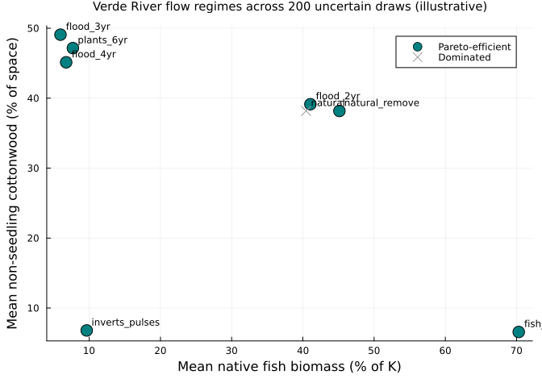
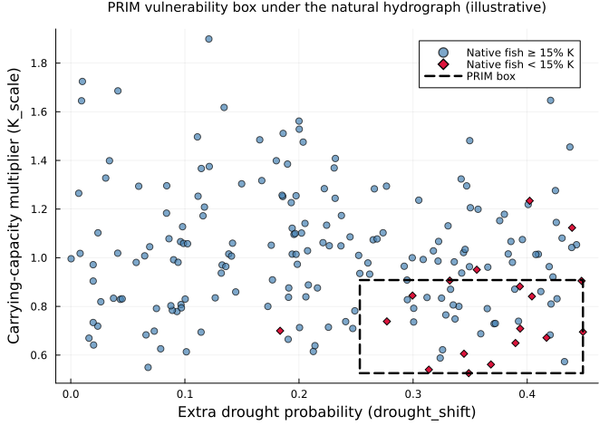

Choosing a river flow regime across fish, trees and insects under uncertainty
Simon Frost
- The question
- Flow regimes and uncertain conditions
- Running the fish community through
ManagedCommunity - Multi-objective trade-offs and the Pareto front
- Comparing decision rules on the river index and native fish
- Value of information and certainty-equivalent EVPI
- Scenario discovery: when does the natural regime fail native fish?
- What is measured and what is assumed
- References
ENV["GKSwstype"] = "100"
using MatrixCommunityModels
using DecisionAnalysis
using Printf, Random, Statistics
using PlotsThe question
Below a dam on a dryland river, managers can choose how often to release spring floods, whether to allow drought years between them, and whether to pair flow releases with mechanical removal of non-native predatory fish. In vignette 22, the four flow regimes of Tonkin et al. (2021) revealed a sharp three-way trade-off on the upper Verde River: an annual spring flood maximises native fish biomass but replaces cottonwood with willow; a flood every six years preceded by a drought maximises cottonwood but collapses native fish; four small pulses a year favour winged aquatic invertebrates while starving both fish and trees; and the natural regime sits in the middle of all three.
That comparison held carrying capacity, future drought frequency and riparian flood mortality fixed. In practice none of those is known cleanly, and managers must weigh native fish against riparian cottonwood and winged insects at the same time. Which flow regime lies on the Pareto frontier? Which regime wins under expected utility, tail-risk aversion, minimax regret, stochastic dominance or ambiguity over future climate? What would it be worth to resolve uncertainty about carrying capacity versus future drought frequency before committing to a flow schedule? And under what conditions does the natural regime fail native fish?
What is published and what is illustrative. The three ecological community models (verde_fish_model of Rogosch et al. 2019, riparian_model of Lytle et al. 2017 and flow_invertebrates of McMullen et al. 2017 / Tonkin et al. 2021) and the four benchmark regimes (tonkin_scenario) are the published models reproduced in vignettes 2, 3 and 22. The intermediate flood frequencies, the non-native removal option, the prior distributions over ecological and hydrological uncertainty, and the decision utilities are illustrative. No monetary cost appears anywhere: outcomes are measured in native fish biomass (as a percentage of nominal carrying capacity K = 47 660 g), non-seedling cottonwood cover (% of riparian space) and mean winged-invertebrate abundance (% of maximum carrying capacity).
Flow regimes and uncertain conditions
We compare eight candidate management regimes over a 60-year horizon (scoring years 11 to 60, after the ten-year transient used by Tonkin et al. 2021), with the natural upper Verde River hydrograph (:natural) as the baseline:
:natural— the historical Paulden year-type sequence (baseline);:fish_annual— the fish prescription of Tonkin et al. (spring flood every year);:flood_2yr— a spring flood every second year (no imposed drought);:flood_3yr— a spring flood every third year, with a drought in the year before it;:flood_4yr— a spring flood every fourth year, with a drought in the year before it;:plants_6yr— the riparian prescription (spring flood every sixth year, drought before);:inverts_pulses— the invertebrate prescription (four 50 m³/s pulses a year, no large floods);:natural_remove— the natural hydrograph paired with annual removal of 30% of non-native smallmouth bass (:MIDO) and green sunfish (:LECY).
const HORIZON = 60
const K_NOMINAL = 47660.0
const NATIVE_FISH = (:CACL, :GIRO, :CAIN)
const NONNATIVE_FISH = (:LECY, :MIDO, :CYLU, :AMNA)
nat_base = tonkin_scenario(:natural; years = HORIZON, invertebrate_years = 15)
fsh_base = tonkin_scenario(:fish; years = HORIZON, invertebrate_years = 15)
plt_base = tonkin_scenario(:plants; years = HORIZON, invertebrate_years = 15)
inv_base = tonkin_scenario(:invertebrates; years = HORIZON, invertebrate_years = 15)
function cyclic_envs(k::Int; drought_before::Bool = true, years::Int = HORIZON)
flood = [mod(y, k) == 0 ? 1 : 0 for y in 1:years]
drought = [drought_before && k > 1 && mod(y + 1, k) == 0 ? 1 : 0 for y in 1:years]
fish = [(SP_highflood = flood[y], SU_highflood = 0, medflood = 0, drought = drought[y],
nonevent = 1 - flood[y] - drought[y]) for y in 1:years]
riparian = [(year = y, flood = Float64(flood[y]), drought = Float64(drought[y]),
nonflood = flood[y] + drought[y] == 1 ? 0.0 : 1.0,
cprop = 0.9, tprop = 0.4, decline = 1.0, tdecline = 1.0) for y in 1:years]
return (; fish, riparian)
end
cyc2 = cyclic_envs(2; drought_before = false)
cyc3 = cyclic_envs(3; drought_before = true)
cyc4 = cyclic_envs(4; drought_before = true)
regime_fish_envs = Dict(
:natural => nat_base.fish,
:fish_annual => fsh_base.fish,
:flood_2yr => cyc2.fish,
:flood_3yr => cyc3.fish,
:flood_4yr => cyc4.fish,
:plants_6yr => plt_base.fish,
:inverts_pulses => inv_base.fish,
:natural_remove => nat_base.fish,
)
regime_rip_envs = Dict(
:natural => nat_base.riparian,
:fish_annual => fsh_base.riparian,
:flood_2yr => cyc2.riparian,
:flood_3yr => cyc3.riparian,
:flood_4yr => cyc4.riparian,
:plants_6yr => plt_base.riparian,
:inverts_pulses => inv_base.riparian,
:natural_remove => nat_base.riparian,
)
regime_labels = [:natural, :fish_annual, :flood_2yr, :flood_3yr, :flood_4yr,
:plants_6yr, :inverts_pulses, :natural_remove]8-element Vector{Symbol}:
:natural
:fish_annual
:flood_2yr
:flood_3yr
:flood_4yr
:plants_6yr
:inverts_pulses
:natural_removeThree sources of uncertainty are drawn together across N = 200 parameter sets (all illustrative, apart from the initial adult fish biomass draws which come from the negative binomial distributions TONKIN_FISH_INITIAL of Tonkin et al. 2021):
K_scale: fish carrying capacity multiplier (log-normal, median 1, roughly 0.6 to 1.7), capturing reach-scale productivity uncertainty;drought_shift: extra drying probability in[0, 0.45], which converts that share of scheduled non-event years into drought years under climate warming;cottonwood_S_scale: multiplier in[0.8, 1.2]on stage-specific cottonwood flood mortality inRIPARIAN_GUILDS;init_seed: integer seed selecting one independent initial fish biomass vector fromtonkin_fish_start.
rng = Xoshiro(31)
N = 200
draws = (;
K_scale = exp.(0.25 .* randn(rng, N)),
drought_shift = 0.45 .* rand(rng, N),
cottonwood_S_scale = 0.8 .+ 0.4 .* rand(rng, N),
init_seed = collect(1:N),
)
(; K_scale = round.(quantile(draws.K_scale, [0.05, 0.5, 0.95]); digits = 2),
drought_shift = round.(quantile(draws.drought_shift, [0.05, 0.5, 0.95]); digits = 2),
cottonwood_S_scale = round.(quantile(draws.cottonwood_S_scale, [0.05, 0.5, 0.95]); digits = 2))(K_scale = [0.63, 0.99, 1.51], drought_shift = [0.02, 0.23, 0.42], cottonwood_S_scale = [0.83, 1.0, 1.19])Running the fish community through ManagedCommunity
ManagedCommunity wraps verde_fish_model with its uncertain carrying capacity, initial biomass draw and climate-shifted drought years. Flow regimes enter as environment interventions and non-native removal enters as remove = [:MIDO => 0.3, :LECY => 0.3]. DecisionAnalysis.jl’s outcomes driver evaluates every regime on every draw.
function apply_drought_shift(envs, shift::Float64, seed::Int)
shift <= 0.0 && return envs
r = Xoshiro(10_000 + seed)
return map(envs) do e
if e.nonevent == 1 && rand(r) < shift
(SP_highflood = 0, SU_highflood = 0, medflood = 0, drought = 1, nonevent = 0)
else
e
end
end
end
function build_fish(θ)
vm = verde_fish_model(; K = K_NOMINAL * θ.K_scale)
n0 = tonkin_fish_start(Xoshiro(Int(θ.init_seed)))
envs = apply_drought_shift(nat_base.fish, θ.drought_shift, Int(θ.init_seed))
return (community = vm.community, n0 = n0, envs = envs)
end
function fish_outcomes(run)
tr = run.trajectory
native_pct = mean(100 .* sum(tr[sp][11:end, 2] .+ tr[sp][11:end, 3] for sp in NATIVE_FISH) ./ K_NOMINAL)
nonnative_pct = mean(100 .* sum(tr[sp][11:end, 2] .+ tr[sp][11:end, 3] for sp in NONNATIVE_FISH) ./ K_NOMINAL)
native_share = native_pct / max(native_pct + nonnative_pct, 1e-12)
collapsed = native_pct < 15.0 ? 1.0 : 0.0
# Local linearisation at the final state under a non-event year (ResilienceCore)
J = linearise(tr.community, tr.u[end, :],
(SP_highflood = 0, SU_highflood = 0, medflood = 0, drought = 0, nonevent = 1);
check = false)
react = MatrixCommunityModels.ResilienceCore.reactivity(J)
return (; native_fish = native_pct, nonnative_fish = nonnative_pct,
native_share = 100 * native_share, collapsed, reactivity = react)
end
managed_fish = ManagedCommunity(build_fish;
parameters = (K_scale = 1.0, drought_shift = 0.0, cottonwood_S_scale = 1.0, init_seed = 1),
outcomes = fish_outcomes)
function env_action(regime::Symbol)
base = regime_fish_envs[regime]
return (; parameters = (; _regime = regime),
environment = (t, env) -> begin
e = base[t]
# Keep any drought shift already realised on non-event years
e.nonevent == 1 && env.drought == 1 ?
(SP_highflood = 0, SU_highflood = 0, medflood = 0, drought = 1, nonevent = 0) : e
end)
end
actions = [
:natural => (;),
:fish_annual => env_action(:fish_annual),
:flood_2yr => env_action(:flood_2yr),
:flood_3yr => env_action(:flood_3yr),
:flood_4yr => env_action(:flood_4yr),
:plants_6yr => env_action(:plants_6yr),
:inverts_pulses => env_action(:inverts_pulses),
:natural_remove => (; remove = [:MIDO => 0.3, :LECY => 0.3]),
]
fish_table = outcomes(managed_fish, actions, draws; replicates = 1, seed = 31)
run_counts(fish_table)(runs = 1600, ok = 1600, failed = 0, absent = 0)For the riparian cottonwood and winged-invertebrate objectives on the exact same 200 draws and regimes, we project riparian_model (scaling cottonwood flood mortality by cottonwood_S_scale and applying the same drought shifts) and flow_invertebrates:
bugs = flow_invertebrates()
inv_scores = Dict{Symbol, Float64}()
for (reg, scen) in ((:natural, nat_base), (:fish_annual, fsh_base), (:plants_6yr, plt_base),
(:inverts_pulses, inv_base), (:natural_remove, nat_base))
sol = project(bugs, scen.invertebrate_n0, scen.invertebrates)
inv_scores[reg] = mean((sol[:mayfly][3652:end, 1] .+ sol[:dragonfly][3652:end, 1]) ./ 2)
end
for (reg, every) in ((:flood_2yr, 365 * 2), (:flood_3yr, 365 * 3), (:flood_4yr, 365 * 4))
envs = invertebrate_flows(flood_pulses(every, 700 * 0.35, 365 * 15)...)
sol = project(bugs, nat_base.invertebrate_n0, envs)
inv_scores[reg] = mean((sol[:mayfly][3652:end, 1] .+ sol[:dragonfly][3652:end, 1]) ./ 2)
end
function apply_rip_drought(envs, shift::Float64, seed::Int)
shift <= 0.0 && return envs
r = Xoshiro(10_000 + seed)
return map(envs) do e
if e.flood == 0.0 && e.drought == 0.0 && rand(r) < shift
merge(e, (drought = 1.0, nonflood = 0.0))
else
e
end
end
end
cottonwood_Q = zeros(length(regime_labels), N)
invert_Q = zeros(length(regime_labels), N)
for d in 1:N
c_old = RIPARIAN_GUILDS.C
c_new = merge(c_old, (S = clamp.(c_old.S .* draws.cottonwood_S_scale[d], 0.0, 0.999),))
guilds_d = merge(RIPARIAN_GUILDS, (C = c_new,))
rm = riparian_model(; guilds = guilds_d)
for (ai, reg) in enumerate(regime_labels)
renvs = apply_rip_drought(regime_rip_envs[reg], draws.drought_shift[d], draws.init_seed[d])
sol = project(rm.community, nat_base.riparian_n0, renvs)
cot = [100 * 350 * sum(sol[:C][k, s] / RIPARIAN_GUILDS.C.den[s] for s in 2:6) / rm.K
for k in 11:(HORIZON + 1)]
cottonwood_Q[ai, d] = mean(cot)
invert_Q[ai, d] = inv_scores[reg]
end
end
belief = SampleBelief(fish_table)
payoff_fish = payoff_table(fish_table, IndividualsUtility(:native_fish))
payoff_cot = PayoffTable(regime_labels, belief.states, cottonwood_Q)
payoff_inv = PayoffTable(regime_labels, belief.states, invert_Q)
# Equal-weight multi-taxon index (each target already on a 0–100 percentage scale)
payoff_river = PayoffTable(regime_labels, belief.states,
(Float64.(payoff_fish.Q) .+ cottonwood_Q .+ invert_Q) ./ 3)
@printf("%-16s %10s %10s %10s %10s %10s\n",
"regime", "fish (%K)", "cotton(%)", "inverts", "mean-3", "collapse")
for (ai, reg) in enumerate(regime_labels)
col_idx = findfirst(==(:collapsed), outcome_names(fish_table))
@printf("%-16s %10.1f %10.1f %10.1f %10.1f %10.2f\n",
reg, mean(Float64.(payoff_fish.Q[ai, :])), mean(cottonwood_Q[ai, :]),
mean(invert_Q[ai, :]), mean(Float64.(payoff_river.Q[ai, :])),
mean(fish_table.values[ai, :, 1, col_idx]))
endregime fish (%K) cotton(%) inverts mean-3 collapse
natural 40.4 38.2 52.0 43.5 0.09
fish_annual 70.3 6.6 46.2 41.0 0.00
flood_2yr 41.1 39.1 43.4 41.2 0.09
flood_3yr 6.0 49.1 41.2 32.1 0.95
flood_4yr 6.8 45.1 41.2 31.0 0.93
plants_6yr 7.7 47.2 41.2 32.0 0.86
inverts_pulses 9.6 6.8 72.8 29.8 0.79
natural_remove 45.1 38.2 52.0 45.1 0.04Multi-objective trade-offs and the Pareto front
Treating native fish, cottonwood and winged invertebrates as three separate objectives in DecisionAnalysis immediately isolates the Pareto-efficient regimes without choosing arbitrary weights first:
objectives = (; native_fish = payoff_fish, cottonwood = payoff_cot, invertebrates = payoff_inv)
pf = decide(objectives, belief, ParetoFront())
pf.chosen7-element Vector{Symbol}:
:fish_annual
:flood_2yr
:flood_3yr
:flood_4yr
:plants_6yr
:inverts_pulses
:natural_removemean_fish = [mean(Float64.(payoff_fish.Q[ai, :])) for ai in eachindex(regime_labels)]
mean_cot = [mean(cottonwood_Q[ai, :]) for ai in eachindex(regime_labels)]
mean_inv = [mean(invert_Q[ai, :]) for ai in eachindex(regime_labels)]
is_pareto = [r in pf.chosen for r in regime_labels]
plt = scatter(mean_fish[is_pareto], mean_cot[is_pareto]; markersize = 8, color = :teal,
label = "Pareto-efficient", xlabel = "Mean native fish biomass (% of K)",
ylabel = "Mean non-seedling cottonwood (% of space)",
title = "Verde River flow regimes across 200 uncertain draws (illustrative)",
titlefontsize = 10, legend = :topright)
scatter!(plt, mean_fish[.!is_pareto], mean_cot[.!is_pareto]; markersize = 6, color = :gray60,
marker = :xcross, label = "Dominated")
for (x, y, r) in zip(mean_fish, mean_cot, regime_labels)
annotate!(plt, x + 0.8, y + 1.2, text(String(r), 8, :left))
end
plt
Notice how :natural_remove pushes the natural hydrograph upwards in native fish biomass without sacrificing cottonwood or aquatic invertebrates, while :flood_2yr and :flood_3yr trace intermediate compromise points between the two extremes of Tonkin et al. (2021).
Comparing decision rules on the river index and native fish
Next we compare five rules on both the three-taxon equal-weight index (prob_river) and native fish alone (prob_fish), including second-order stochastic dominance (StochasticDominance(; order = 2)) and Klibanoff–Marinacci–Mukerji smooth ambiguity (SmoothAmbiguity) across two climate priors (a wet-skewed prior weighting low drought_shift draws and a dry-skewed prior weighting high drought_shift draws):
prob_river = DecisionProblem(payoff_river, belief; baseline = :natural)
prob_fish = DecisionProblem(payoff_fish, belief; baseline = :natural)
rules = [
"MaxExpectedUtility" => MaxExpectedUtility(),
"CVaR (worst 20%)" => DecisionRule(CVaR(0.2)),
"MinimaxRegret" => MinimaxRegret(),
"StochasticDominance (SSD)" => StochasticDominance(; order = 2),
]
@printf("%-28s %-28s %-28s\n", "rule", "three-taxon index", "native fish only")
for (label, rule) in rules
c_r = join(string.(decide(prob_river, rule).chosen), ", ")
c_f = join(string.(decide(prob_fish, rule).chosen), ", ")
@printf("%-28s %-28s %-28s\n", label, c_r, c_f)
endrule three-taxon index native fish only
MaxExpectedUtility natural_remove fish_annual
CVaR (worst 20%) natural_remove fish_annual
MinimaxRegret fish_annual fish_annual
StochasticDominance (SSD) natural_remove fish_annualTo evaluate ambiguity aversion over future hydrology, we build a CredalSet from two weighted priors over the 200 draws — one concentrating probability on low drought_shift (near-historical climate) and one on high drought_shift (drier climate) — and compare GammaMaximin() with DecisionRule(SmoothAmbiguity(0.15)):
wet_w = [draws.drought_shift[d] < 0.225 ? 2.0 : 0.5 for d in 1:N]
dry_w = [draws.drought_shift[d] >= 0.225 ? 2.0 : 0.5 for d in 1:N]
wet_w ./= sum(wet_w)
dry_w ./= sum(dry_w)
credal = CredalSet(belief.states, [wet_w, dry_w])
prob_ambig = DecisionProblem(payoff_river, credal; baseline = :natural)
(gamma_maximin = decide(prob_ambig, GammaMaximin()).chosen,
smooth_ambiguity = decide(prob_ambig, DecisionRule(SmoothAmbiguity(0.15))).chosen)(gamma_maximin = [:natural_remove], smooth_ambiguity = [:natural_remove])Value of information and certainty-equivalent EVPI
How much would it be worth (in three-taxon index points, or in native fish % K) to know carrying capacity, future drought shift or cottonwood flood mortality before setting the flow regime? We also compute the certainty-equivalent EVPI (ce_evpi) for a risk-averse manager (ExponentialUtility(:river_index; risk_aversion = 0.05)):
evpi_river = evpi(prob_river, SampleAverage())
evpi_fish = evpi(prob_fish, SampleAverage())
ce_river = ce_evpi(prob_river, ExponentialUtility(:river_index; risk_aversion = 0.05))
focal = (:K_scale, :drought_shift, :cottonwood_S_scale)
@printf("%-22s %12s %12s\n", "uncertainty", "river index", "native fish")
for name in focal
er = evppi(prob_river, name)
ef = evppi(prob_fish, name)
@printf("%-22s %6.2f ± %-4.2f %6.2f ± %-4.2f\n",
name, Float64(er.value), er.standard_error, Float64(ef.value), ef.standard_error)
end
@printf("%-22s %6.2f ± %-4.2f %6.2f ± %-4.2f\n",
"all (EVPI)", Float64(evpi_river.value), evpi_river.standard_error,
Float64(evpi_fish.value), evpi_fish.standard_error)
@printf("%-22s %12.2f\n", "CE-EVPI (CARA 0.05)", Float64(ce_river.value))uncertainty river index native fish
K_scale 0.05 ± 0.10 0.00 ± 0.00
drought_shift 0.00 ± 0.00 0.00 ± 0.00
cottonwood_S_scale -0.00 ± 0.00 0.00 ± 0.00
all (EVPI) 0.82 ± 0.14 0.00 ± 0.00
CE-EVPI (CARA 0.05) 0.83Scenario discovery: when does the natural regime fail native fish?
Under the baseline :natural hydrograph, native fish drop below 15% of nominal carrying capacity in a subset of the 200 draws. Patient Rule Induction Method (prim_boxes) finds the interpretable hyper-rectangle in (K_scale, drought_shift, cottonwood_S_scale) space where collapse is concentrated:
nat_idx = findfirst(==(:natural), action_labels(fish_table))
col_idx = findfirst(==(:collapsed), outcome_names(fish_table))
nat_collapsed = vec(fish_table.values[nat_idx, :, 1, col_idx]) .> 0.5
prim = prim_boxes(belief, nat_collapsed; peel_alpha = 0.15, min_mass = 0.15)
top_box = argmax(b -> b.density, prim.frontier)
(base_collapse_rate = round(prim.base_rate; digits = 3),
box_collapse_density = round(top_box.density; digits = 3),
box_coverage = round(top_box.coverage; digits = 3),
box_mass = round(top_box.mass; digits = 3),
bounds = top_box.bounds)(base_collapse_rate = 0.09, box_collapse_density = 0.448, box_coverage = 0.722, box_mass = 0.145, bounds = Dict(:cottonwood_S_scale => (0.8001205902530144, 1.1995402632173442), :drought_shift => (0.2533088730035887, 0.44883520149788825), :init_seed => (45.0, 200.0), :K_scale => (0.5257601576346292, 0.9083381537350731)))plt = scatter(draws.drought_shift[.!nat_collapsed], draws.K_scale[.!nat_collapsed];
color = :steelblue, alpha = 0.7, label = "Native fish ≥ 15% K",
xlabel = "Extra drought probability (drought_shift)",
ylabel = "Carrying-capacity multiplier (K_scale)",
title = "PRIM vulnerability box under the natural hydrograph (illustrative)",
titlefontsize = 10, legend = :topright)
scatter!(plt, draws.drought_shift[nat_collapsed], draws.K_scale[nat_collapsed];
color = :crimson, marker = :diamond, label = "Native fish < 15% K")
if haskey(top_box.bounds, :drought_shift) && haskey(top_box.bounds, :K_scale)
xlo, xhi = top_box.bounds[:drought_shift]
ylo, yhi = top_box.bounds[:K_scale]
plot!(plt, [xlo, xhi, xhi, xlo, xlo], [ylo, ylo, yhi, yhi, ylo];
lw = 2.5, color = :black, ls = :dash, label = "PRIM box")
end
plt
What is measured and what is assumed
| Item | Value | Source |
|---|---|---|
Verde River fish community (7 species, vital rates, year-type modifiers, K = 47 660 g) | verde_fish_model() | Rogosch et al. 2019 (vignette 2) |
| Initial adult fish biomass draws | TONKIN_FISH_INITIAL (tonkin_fish_start) | Tonkin et al. 2021 (vignette 22) |
| Riparian plant guilds (5 guilds, 6 stages) | riparian_model(), RIPARIAN_GUILDS | Lytle et al. 2017 (vignette 3) |
| Aquatic invertebrates (mayfly, dragonfly, ostracod) | flow_invertebrates(), FLOW_INVERTEBRATES | McMullen et al. 2017 / Tonkin et al. 2021 (vignette 22) |
Four benchmark regimes (:natural, :fish_annual, :plants_6yr, :inverts_pulses) | tonkin_scenario | Tonkin et al. 2021 |
Intermediate flood cycles (:flood_2yr, :flood_3yr, :flood_4yr) and 30% non-native removal | cyclic_envs, remove = [:MIDO => 0.3, :LECY => 0.3] | illustrative |
Prior on K_scale, drought_shift, cottonwood_S_scale (200 draws) | log-normal and uniform bounds | illustrative |
| Equal-weight three-taxon river index, 15% collapse threshold, CARA 0.05 and climate credal priors | payoff_river, ExponentialUtility(:river_index; risk_aversion = 0.05), CredalSet | illustrative |
References
Lytle, D. A., Merritt, D. M., Tonkin, J. D., Olden, J. D. & Reynolds, L. V. (2017). Linking river flow regimes to riparian plant guilds: a community-wide modeling approach. Ecological Applications 27, 1338–1350.
McMullen, L. E., De Leenheer, P., Tonkin, J. D. & Lytle, D. A. (2017). High mortality and enhanced recovery: modelling the countervailing effects of disturbance on population dynamics. Ecology Letters 20, 1566–1575.
Rogosch, J. S., Tonkin, J. D., Lytle, D. A., Merritt, D. M., Reynolds, L. V. & Olden, J. D. (2019). Increasing drought favors nonnative fishes in a dryland river: evidence from a multispecies demographic model. Ecosphere 10, e02681.
Tonkin, J. D., Olden, J. D., Merritt, D. M., Reynolds, L. V., Rogosch, J. S. & Lytle, D. A. (2021). Designing flow regimes to support entire river ecosystems. Frontiers in Ecology and the Environment 19, 326–333. https://doi.org/10.1002/fee.2348.